Final Fantasy VII Remake — Chương 2: Fateful Encounters
Bản dịch cá nhân, chỉ để tham khảo khi chơi. Nội dung gốc thuộc về PowerPyx (tác giả Gage), đăng ngày 9/4/2020 tại
https://www.powerpyx.com/final-fantasy-7-vii-remake-chapter-2-fateful-encounters-walkthrough/.
Bản gốc có bản quyền của PowerPyx; hãy xem bài gốc để có đầy đủ ảnh minh họa và ủng hộ tác giả.
Quy ước: tên mục tiêu, vật phẩm, kẻ địch, kỹ năng, Materia giữ nguyên tiếng Anh như trong game.
Chương 2: Fateful Encounters là nhiệm vụ cốt truyện thứ hai trong Final Fantasy VII Remake. Hướng dẫn này đưa bạn qua mọi mục tiêu của nhiệm vụ chính Fateful Encounters.
Chương 2 bắt đầu khi bạn hoàn thành Chương 1: The Destruction of Mako Reactor 1.
Khu vực: Sector 8
Yêu cầu: Hoàn thành Chương 1: The Destruction of Mako Reactor 1
Mục tiêu:
Use the Escape Route
Ngay sau khi Chương 1 kết thúc, bạn ở trong một đường hầm cùng cả nhóm, tiếp tục cuộc tẩu thoát khỏi khu lò phản ứng. Sau khi chui qua đoạn bị sập, trước khi rẽ phải, có một rương bạn có thể mở, chứa 2 Potions.
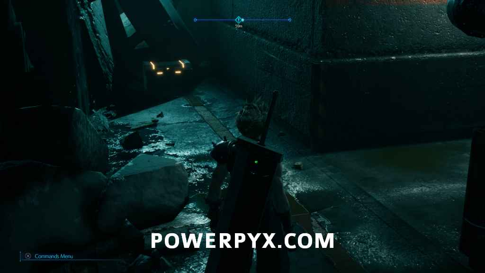
Sau khi ra khỏi cánh cửa mà Jessie cho nổ tung, bạn có một đoạn cắt cảnh ngắn, rồi được bảo đi theo nhóm tiếp. Ở bên phải, trước khi lên cầu thang, có một rương khác chứa một Ether.
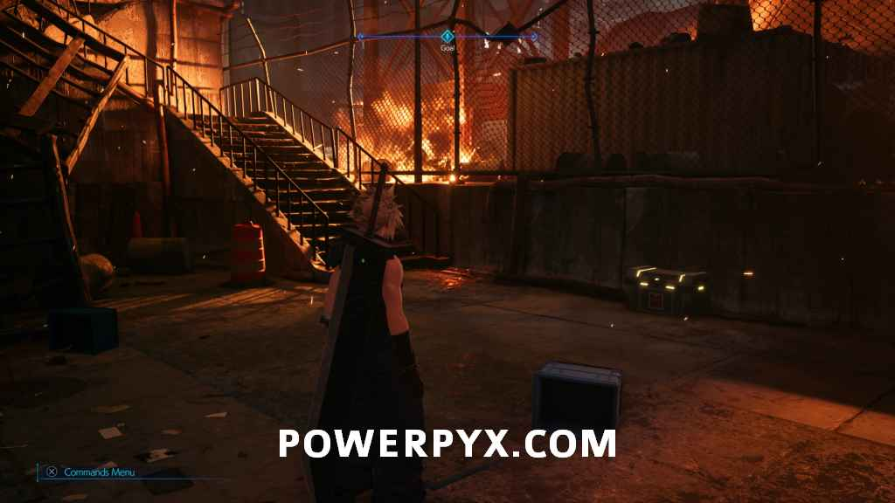
Tiếp tục dọc đường, và sau một đoạn hội thoại bạn nhận được Healing Materia, kèm phần hướng dẫn gắn Materia vào vũ khí và giáp để trang bị chúng. Gắn xong thì thoát ra và đi tiếp về phía trước.
Reach the Sector 8 Station
Đi thẳng rồi sang trái, ngay trước tòa nhà ARCADE, cạnh một chiếc xe có một rương khác chứa 2 Potions.

Tiếp tục tiến lên dọc đường, sau khi leo cầu thang, trước khi bước lên đống đổ nát, có một rương chứa 3 Grenades. Đi tiếp theo con đường một chiều cho tới khi tới một đoạn cắt cảnh khác.
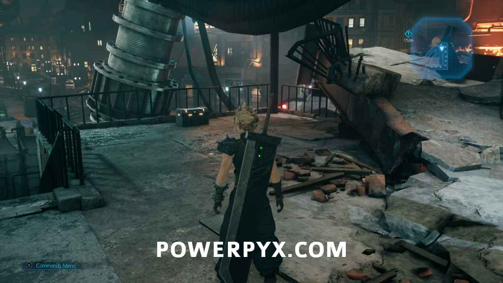
Follow Him
Đi theo đường cốt truyện chính cho tới hết các đoạn cắt cảnh. Ở phần này bạn không thể đi chệch hướng hay nhặt thứ gì.
Taking a Detour
Sau đoạn cắt cảnh, bạn có thể đi tiếp theo con đường một chiều. Khi tới mái nhà, nơi game chỉ cho bạn thấy lò phản ứng lần nữa, trước khi đi xuống phía bên kia sẽ có thêm một rương chứa 3 Potions.
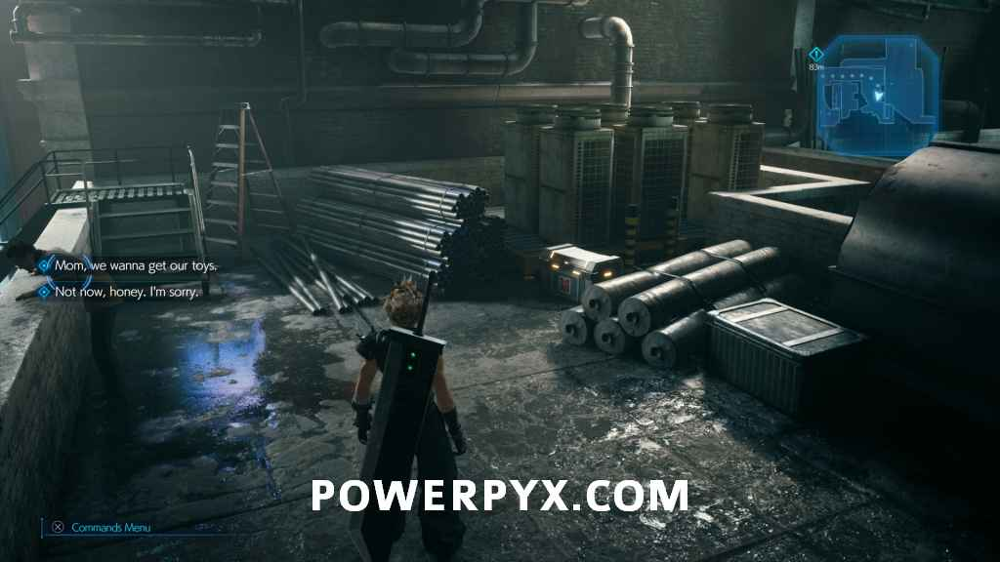
Leo xuống thang và đi về hướng Tây dọc con phố. Bạn chưa thể đi về hướng Đông, nơi có lính, vì game đang chặn. Đi theo hướng ngược lại để xem một đoạn cắt cảnh, nơi bạn gặp một nhân vật chính mới. Hãy trả lời cô ấy bằng "How much?" và cô sẽ cho bạn một Yellow Flower. Sau thêm một đoạn cắt cảnh, một nhóm Security Officer sẽ tìm cách chặn bạn, và giờ bạn phải xử lý chúng.
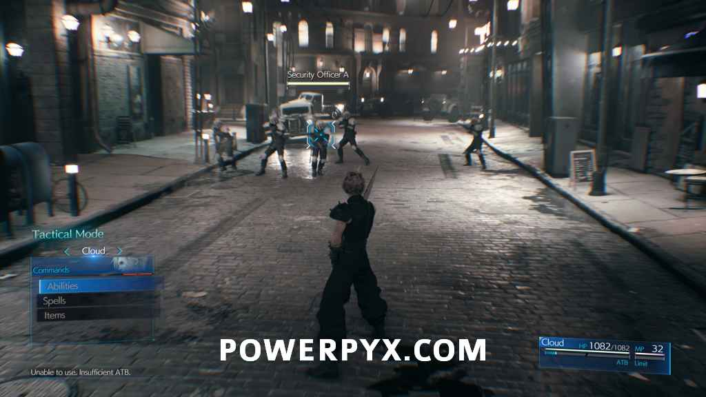
Evade Pursuers
Đi trước vào lối phía Đông mà lúc nãy bạn bị chặn, và hạ hai Security Officer cùng Guard Dog. Khi xử lý xong, nhặt quả cầu màu tím gần đó để nhận một HP Up Materia.
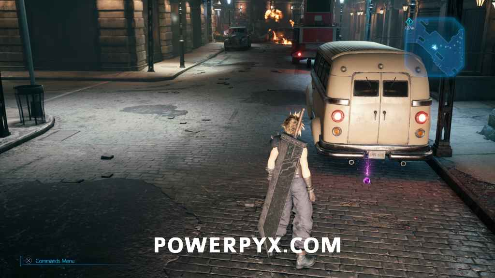
Tiếp theo đi vào con hẻm mà cô gái được cho thấy chạy xuống trong đoạn cắt cảnh. Cuối hẻm sẽ bị chặn, nhưng bạn có thể mở một rương gần đó để lấy một Hi-Potion.
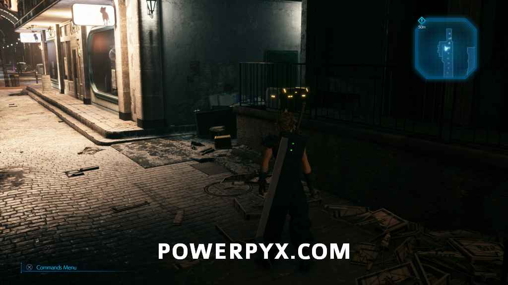
Giờ đi về phía Nam, hướng tới nhóm kẻ địch. Hạ chúng rồi nhặt một quả cầu tím gần đó để nhận một Deadly Dodge Materia.
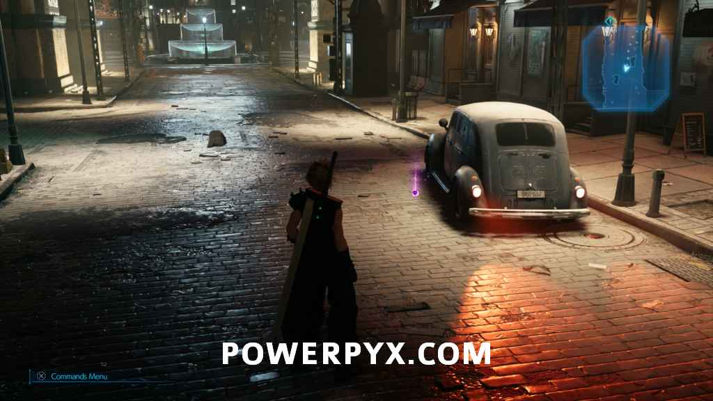
Đi xuống con phố phía Đông, hướng tới Security Officer và hai Guard Dog. Sau khi hạ chúng, ở cuối đường có một rương chứa một cặp Power Wristguards.
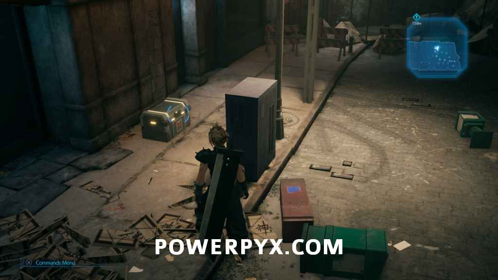
Tiếp tục đi về phía Nam tới khu vực có đài phun nước, và giờ bạn phải đối phó vài đợt kẻ địch. Đầu tiên là hai Officer và một Dog, rồi bốn Officer, tiếp theo là hai Shock Trooper, và cuối cùng là bốn Officer nữa.
Flight through the City / Climb to the Roof
Sau khi hạ hết, bạn cần tìm một lối khác. Một chiếc thang gần đó được đánh dấu để bạn lên mái nhà. Trước khi leo, mở rương gần đó để lấy 2 Grenades.
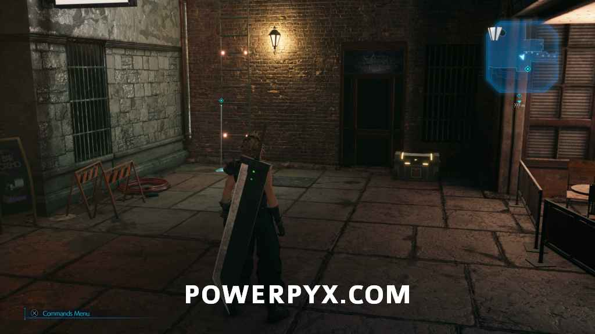
Sau khi leo thang, một số kẻ địch sẽ xuất hiện phía sau và bắn vào bạn. Hãy phớt lờ chúng và tiếp tục đi dọc mái nhà.
Break the Blockade
Sau khi leo xuống lại một cái thang, sẽ có một rương gần đó chứa một Iron Bangle. Món này mạnh hơn Bronze Bangle của bạn và có một ô Materia, nên bạn nên đổi sang nó và gắn một trong các Materia vừa nhặt trước đó.
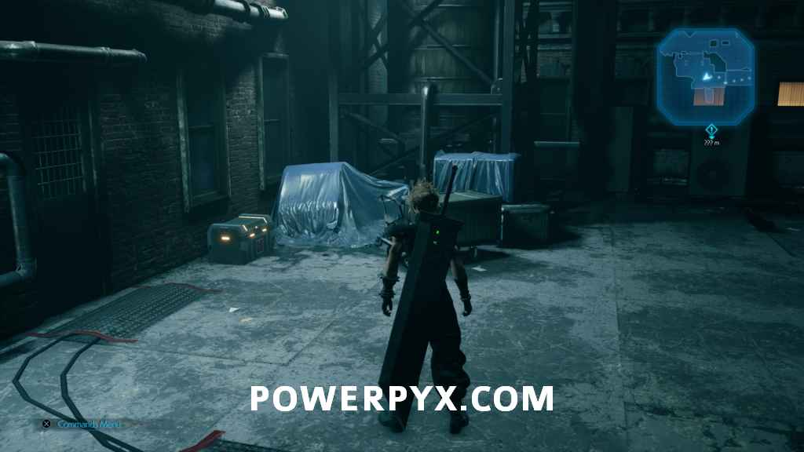
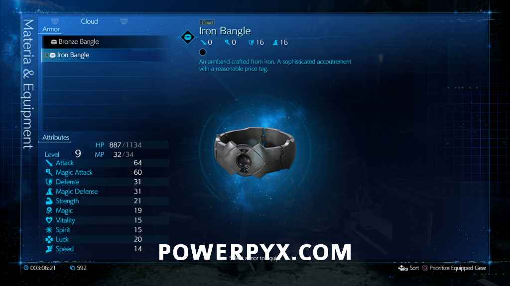
Tiếp tục xuống hai cái thang tiếp theo để trở lại mặt đất, rồi đi dọc đường. Ở khu vực kế tiếp sẽ có thêm ba kẻ địch, kèm một loại kẻ địch người mới là Riot Trooper. Những tên này mang một tấm khiên lớn, nên bạn cần cố tấn công từ phía sau. Nếu bạn đánh vào mặt trước của khiên khi chúng đang đỡ, bạn sẽ bị choáng trong chốc lát và đứt chuỗi combo. Tuy nhiên chúng yếu hệ Fire, nên nếu có một lượt ATB, bạn có thể dùng Fire để gây sát thương lớn hoặc thậm chí hạ chúng ngay lập tức.

Đi tiếp và bạn tới một đoạn đường dài với ba Riot Trooper nữa cùng một nhóm Officer chặn đường. Khi đã xử lý xong, đi về hướng Đông và bạn có thể lên vài bậc thang tới khu vực phụ phía trên. Phía sau một số bàn ghế, bạn tìm thấy một rương khác chứa một Ether.
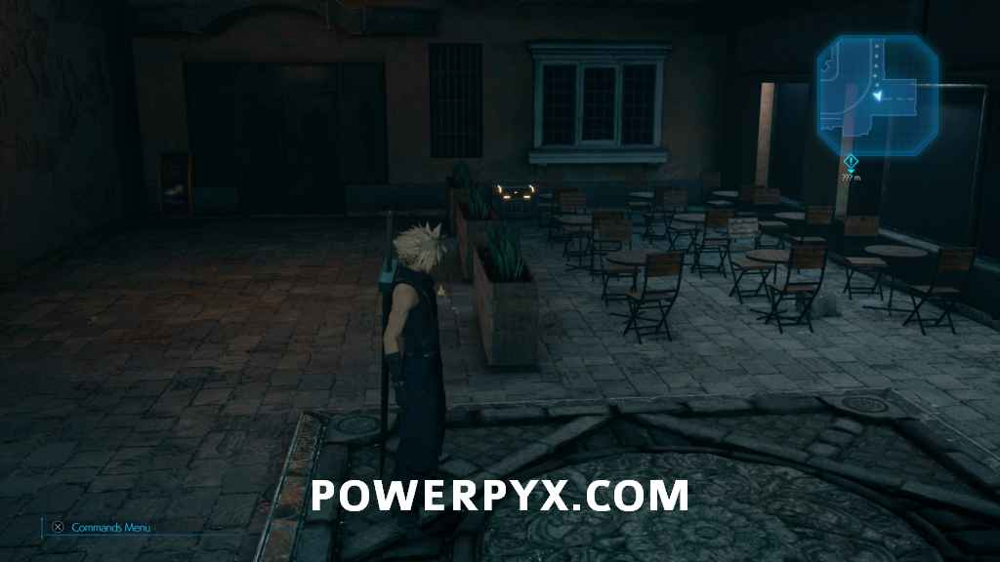
Đi tiếp theo con đường và bạn sẽ đánh một Riot Soldier khác cùng hai Guard Dog nữa. Ngay sau chúng bạn có thể vào một đoạn đường ngắn bị chặn có thêm một rương chứa một Hi-Potion.
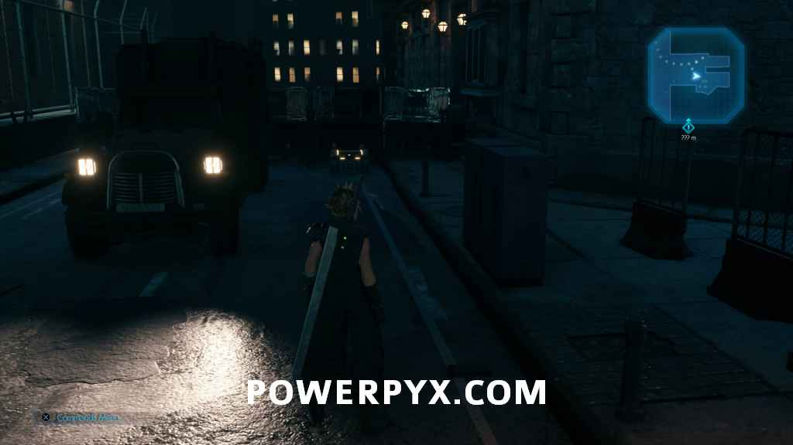
Đi tiếp và bạn sẽ bị chặn bởi nhiều chiếc xe chở thêm rất nhiều quân. Cùng với nhóm xuất hiện phía sau bạn sẽ có một Riot Trooper có tên là The Huntsman. Hắn có nhiều máu hơn hẳn Riot Trooper thường, nhưng có thể xử lý theo cách tương tự. Đừng tấn công hắn khi khiên đang giơ lên, hãy đánh từ phía sau. Nếu bạn đánh hắn bằng Fire, hắn sẽ rơi vào trạng thái Pressure, cho phép bạn gây rất nhiều sát thương và làm hắn Stagger. Khi hạ xong hắn, bạn có một đoạn cắt cảnh và rời khỏi khu vực.

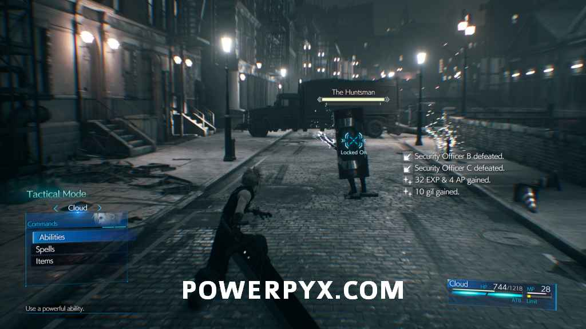
Last Train
Giờ bạn ở trên tàu cùng cả nhóm, hãy đi về phía đầu tàu. Sau khi chen qua mấy thùng gỗ, bạn có thể quay lại để thấy một rương chứa 100 Gil. Ở toa đầu tiên đầy hành khách, bạn có thể dừng lại nói chuyện với từng thành viên trong nhóm, rồi vào toa kế tiếp để xem một đoạn cắt cảnh với Barret. Nói chuyện với anh nếu muốn, rồi đi lên đầu và nói chuyện với Jessie để kết thúc chương.
Vậy là hoàn thành Chương 2: Fateful Encounters trong Final Fantasy VII Remake. Giờ nhiệm vụ Home Sweet Slum bắt đầu.
Kế tiếp: Chương 3: Home Sweet Slum
Các hướng dẫn nhiệm vụ khác có trong bộ hướng dẫn Final Fantasy 7 (VII) đầy đủ của PowerPyx.